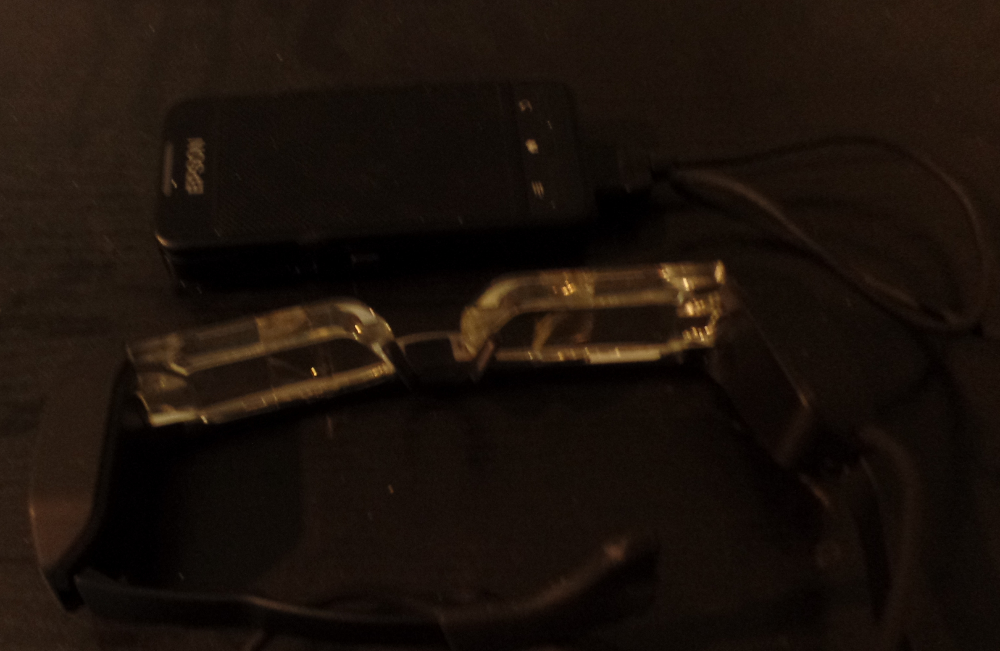
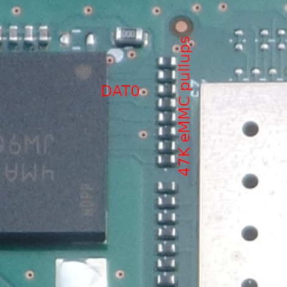

Epson Moverio BT-200 (embt2ws)
|
 CHANGE_ME | |
| Manufacturer | Epson |
|---|---|
| Name | Moverio BT-200 |
| Codename | embt2ws |
| Released | 2014 |
| Category | testing |
| Original software | Android |
| Original version | 4.04 (Kernel 3.0.21, U-Boot 1.1.4) |
| Hardware | |
| Chipset | TI OMAP 4460 |
| CPU | 2x1.2 GHz Cortex A9 |
| GPU | PowerVR SGX540 |
| Display | 960x540 see through glasses U-Boot 1.1.4 |
| Storage | 8GB eMMC + uSD slot |
| Memory | 1024 MB |
| Architecture | armv7 |
| Type | Glasses |
{kind=link}
Status: pmOS device package needs to be created
| USB Networking | |
|---|---|
| Flashing | |
| Touchscreen | |
| Display | |
| WiFi | |
| FDE | |
| Mainline | |
| Battery | |
| 3D Acceleration | |
| Audio | |
| Bluetooth | |
| Camera | |
| GPS | |
| Mobile data | |
| SMS | |
| Calls | |
| USB OTG / USB-C Role switching | |
| NFC | |
| Accelerometer | |
|---|---|
| Magnetometer | |
| Ambient Light | |
| Proximity | |
| Hall Effect | |
| Barometer | |
| Power Sensor | |
| Camera Flash | |
|---|---|
| Keyboard | |
| Touchpad | |
| USB-A | |
| HDMI/DP | |
| Ir TX | |
| Ir RX | |
| Stylus | |
| Haptics | |
| Ethernet | |
| FOSS bootloader | |
|
This device is based on the TI OMAP 4460. See the SoC page for common tips, guides and troubleshooting steps |
Contributors
- Andi
Users owning this device
How to influence/change boot order
Boot order is eMMC, USB, UART, uSD. That can be overwritten by software until the next cold boot:
eMMC boot can be skipped using a 470 Ohm resistor from eMMC DAT 0 to GND on powerup. So that
would be a recovery if loader on eMMC is broken.

{kind=link}
Accessing serial console in original system
JP1 (soldering jumper on the back side = gpio-138) needs to be shorted to enable serial console on factory kernel/u-boot. (4 2.54mm pitched holes). Voltage level is 1.8V
{kind=link}
Boot process of the original system
Xloader is located at sector 256 and loads U-Boot from sector 512 as a raw headerless binary on the same device as Xloader also was loaded from. CONFIG_SYS_TEXT_BASE of such a u-boot has te be set to 0x80e80000. Size limit is 0x60000 bytes.
Factory U-Boot tries to load a sdboot.scr from the first partition (which must bet FAT) of the uSD card which is executed if some requirements are met, if not, normal boot from eMMC is done. Fastboot can be activated via commandline.
How to enter flash mode
Installation
System can be installed on uSD card. To be able to boot that you need to either
- zero the xloader and u-boot area of the eMMC (after doing a backup)
- hack the integrated u-boot bootcmd to ignore check_code test results to boot the sdboot.scr
- use one of the methods to temporarily change boot order
- use u-boot commandline to manually load stuff (which can also be a modern u-boot)
See also
- Factory kernel
- [1] branch epson-6.1, mainling attempts (look also at the corresponding wiki)
- [2] branch v2022.10-epson u-boot mainling attempts (look also at the corresponding wiki)